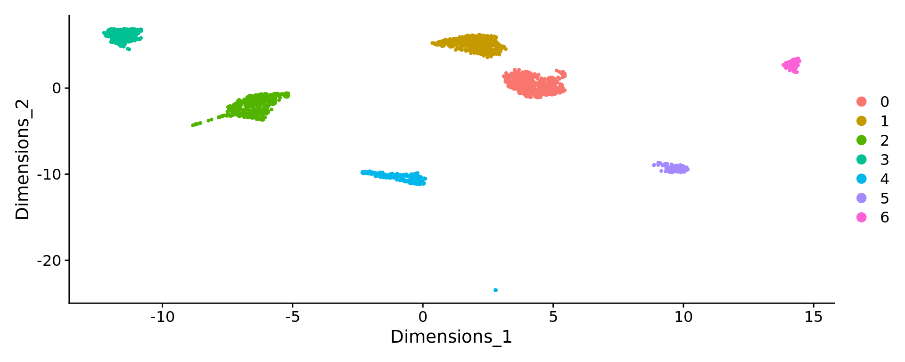

Last updated: 2025-04-14
Checks: 6 1
Knit directory: KODAMA-Analysis/
This reproducible R Markdown analysis was created with workflowr (version 1.7.1). The Checks tab describes the reproducibility checks that were applied when the results were created. The Past versions tab lists the development history.
The R Markdown is untracked by Git. To know which version of the R
Markdown file created these results, you’ll want to first commit it to
the Git repo. If you’re still working on the analysis, you can ignore
this warning. When you’re finished, you can run
wflow_publish to commit the R Markdown file and build the
HTML.
Great job! The global environment was empty. Objects defined in the global environment can affect the analysis in your R Markdown file in unknown ways. For reproduciblity it’s best to always run the code in an empty environment.
The command set.seed(20240618) was run prior to running
the code in the R Markdown file. Setting a seed ensures that any results
that rely on randomness, e.g. subsampling or permutations, are
reproducible.
Great job! Recording the operating system, R version, and package versions is critical for reproducibility.
Nice! There were no cached chunks for this analysis, so you can be confident that you successfully produced the results during this run.
Great job! Using relative paths to the files within your workflowr project makes it easier to run your code on other machines.
Great! You are using Git for version control. Tracking code development and connecting the code version to the results is critical for reproducibility.
The results in this page were generated with repository version 5f5ac63. See the Past versions tab to see a history of the changes made to the R Markdown and HTML files.
Note that you need to be careful to ensure that all relevant files for
the analysis have been committed to Git prior to generating the results
(you can use wflow_publish or
wflow_git_commit). workflowr only checks the R Markdown
file, but you know if there are other scripts or data files that it
depends on. Below is the status of the Git repository when the results
were generated:
Ignored files:
Ignored: .RData
Ignored: .Rhistory
Ignored: .Rproj.user/
Untracked files:
Untracked: KODAMA.svg
Untracked: analysis/singlecell_datamatrix.Rmd
Untracked: analysis/singlecell_seurat.Rmd
Untracked: code/Acinar_Cell_Carcinoma.ipynb
Untracked: code/Adenocarcinoma.ipynb
Untracked: code/Adjacent_normal_section.ipynb
Untracked: code/DLFPC_preprocessing.R
Untracked: code/DLPFC - BANKSY.R
Untracked: code/DLPFC - BASS.R
Untracked: code/DLPFC - BAYESPACE.R
Untracked: code/DLPFC - Nonspatial.R
Untracked: code/DLPFC - PRECAST.R
Untracked: code/DLPFC_comparison.R
Untracked: code/DLPFC_results_analysis.R
Untracked: code/MERFISH - BANKSY.R
Untracked: code/MERFISH - BASS.R
Untracked: code/MERFISH - BAYESPACE.R
Untracked: code/MERFISH - Nonspatial.R
Untracked: code/MERFISH - PRECAST.R
Untracked: code/MERFISH_comparison.R
Untracked: code/MERFISH_results_analysis.R
Untracked: code/VisiumHD-CRC.ipynb
Untracked: code/VisiumHDassignment.py
Untracked: code/deep learning code DLPFC.R
Untracked: code/save tiles.py
Untracked: data/Annotations/
Untracked: data/DLFPC-Br5292-input.RData
Untracked: data/DLFPC-Br5595-input.RData
Untracked: data/DLFPC-Br8100-input.RData
Untracked: data/DLPFC-general.RData
Untracked: data/MERFISH-input.RData
Untracked: data/trajectories.RData
Untracked: data/trajectories_VISIUMHD.RData
Untracked: output/BANSKY-results.RData
Untracked: output/BASS-results.RData
Untracked: output/BayesSpace-results.RData
Untracked: output/CRC-image.RData
Untracked: output/CRC-image2.RData
Untracked: output/CRC.png
Untracked: output/CRC2.png
Untracked: output/CRC7.png
Untracked: output/CRC8.png
Untracked: output/CRC_boxplot.png
Untracked: output/CRC_boxplot.svg
Untracked: output/CRC_boxplot2.svg
Untracked: output/CRC_linee.svg
Untracked: output/DL.RData
Untracked: output/DLFPC-All-2.RData
Untracked: output/DLFPC-All.RData
Untracked: output/DLFPC-Br5292.RData
Untracked: output/DLFPC-Br5595.RData
Untracked: output/DLFPC-Br8100.RData
Untracked: output/DLFPC-variablesXdeeplearning.RData
Untracked: output/DLPFC-BANSKY-results.RData
Untracked: output/DLPFC-BASS-results.RData
Untracked: output/DLPFC-BayesSpace-results.RData
Untracked: output/DLPFC-Nonspatial-results.RData
Untracked: output/DLPFC-PRECAST-results.RData
Untracked: output/DLPFC_all_cluster.svg
Untracked: output/DLPFCpathway.RData
Untracked: output/Figure 1 - boxplot.pdf
Untracked: output/Figure 2 - DLPFC 10.pdf
Untracked: output/Figures/
Untracked: output/KODAMA-results.RData
Untracked: output/KODAMA_DLPFC_All_original.svg
Untracked: output/KODAMA_DLPFC_Br5595.svg
Untracked: output/KODAMA_DLPFC_Br5595_slide.svg
Untracked: output/Loupe.csv
Untracked: output/MERFISH-BANSKY-results.RData
Untracked: output/MERFISH-BASS-results.RData
Untracked: output/MERFISH-BayesSpace-results.RData
Untracked: output/MERFISH-KODAMA-results.RData
Untracked: output/MERFISH-Nonspatial-results.RData
Untracked: output/MERFISH-PRECAST-results.RData
Untracked: output/MERFISH.RData
Untracked: output/Nonspatial-results.RData
Untracked: output/Prostate-GSEA.csv
Untracked: output/Prostate-KODAMA.RData
Untracked: output/Prostate-trajectory.csv
Untracked: output/Prostate.RData
Untracked: output/VisiumHD-RNA.RData
Untracked: output/VisiumHD-genes.pdf
Untracked: output/VisiumHD.RData
Untracked: output/boh.svg
Untracked: output/desmoplastic_distance_carcinoma.csv
Untracked: output/image.RData
Untracked: output/pp.RData
Untracked: output/pp2.RData
Untracked: output/pp3.RData
Untracked: output/pp4.RData
Untracked: output/pp5.RData
Untracked: output/prostate1.svg
Untracked: output/prostate2.svg
Untracked: output/prostate3.svg
Untracked: output/subclusters1.csv
Untracked: output/subclusters2.csv
Untracked: output/subclusters3.csv
Untracked: output/tight_boundary.geojson
Untracked: output/trajectory.csv
Unstaged changes:
Deleted: analysis/D1.Rmd
Deleted: analysis/DLPFC-12.Rmd
Deleted: analysis/DLPFC-4.Rmd
Modified: analysis/DLPFC.Rmd
Deleted: analysis/DLPFC1.Rmd
Deleted: analysis/DLPFC10.Rmd
Deleted: analysis/DLPFC2.Rmd
Deleted: analysis/DLPFC3.Rmd
Deleted: analysis/DLPFC4.Rmd
Deleted: analysis/DLPFC5.Rmd
Deleted: analysis/DLPFC6.Rmd
Deleted: analysis/DLPFC7.Rmd
Deleted: analysis/DLPFC8.Rmd
Deleted: analysis/DLPFC9.Rmd
Deleted: analysis/Du1.Rmd
Deleted: analysis/Du10.Rmd
Deleted: analysis/Du11.Rmd
Deleted: analysis/Du12.Rmd
Deleted: analysis/Du13.Rmd
Deleted: analysis/Du14.Rmd
Deleted: analysis/Du15.Rmd
Deleted: analysis/Du16.Rmd
Deleted: analysis/Du17.Rmd
Deleted: analysis/Du18.Rmd
Deleted: analysis/Du19.Rmd
Deleted: analysis/Du2.Rmd
Deleted: analysis/Du20.Rmd
Deleted: analysis/Du3.Rmd
Deleted: analysis/Du4.Rmd
Deleted: analysis/Du5.Rmd
Deleted: analysis/Du6.Rmd
Deleted: analysis/Du7.Rmd
Deleted: analysis/Du8.Rmd
Deleted: analysis/Du9.Rmd
Modified: analysis/Giotto.Rmd
Modified: analysis/MERFISH.Rmd
Deleted: analysis/MERFISH1a (copy).Rmd
Deleted: analysis/MERFISH1a.Rmd
Deleted: analysis/MERFISH1b (copy).Rmd
Deleted: analysis/MERFISH1b.Rmd
Deleted: analysis/MERFISH2a (copy).Rmd
Deleted: analysis/MERFISH2a.Rmd
Deleted: analysis/MERFISH2b (copy).Rmd
Deleted: analysis/MERFISH2b.Rmd
Deleted: analysis/MERFISH3a (copy).Rmd
Deleted: analysis/MERFISH3a.Rmd
Deleted: analysis/MERFISH3b (copy).Rmd
Deleted: analysis/MERFISH3b.Rmd
Deleted: analysis/MERFISH4a (copy).Rmd
Deleted: analysis/MERFISH4a.Rmd
Deleted: analysis/MERFISH4b (copy).Rmd
Deleted: analysis/MERFISH4b.Rmd
Modified: analysis/Prostate.Rmd
Deleted: analysis/STARmap.Rmd
Modified: analysis/Seurat.Rmd
Deleted: analysis/Simulation.Rmd
Deleted: analysis/Single-cell.Rmd
Modified: analysis/SpatialExperiment.Rmd
Modified: analysis/VisiumHD.Rmd
Modified: code/VisiumHD_CRC_download.sh
Deleted: data/Pathology.csv
Deleted: data/merfish.Rmd
Deleted: data/vis.R
Note that any generated files, e.g. HTML, png, CSS, etc., are not included in this status report because it is ok for generated content to have uncommitted changes.
There are no past versions. Publish this analysis with
wflow_publish() to start tracking its development.
For this tutorial, we will be analyzing the a dataset of Peripheral Blood Mononuclear Cells (PBMC) freely available from 10X Genomics. There are 2,700 single cells that were sequenced on the Illumina NextSeq 500. The raw data can be found here.
We start by reading in the data. The Read10X() function reads in the output of the cellranger pipeline from 10X, returning a unique molecular identified (UMI) count matrix. The values in this matrix represent the number of molecules for each feature (i.e. gene; row) that are detected in each cell (column). Note that more recent versions of cellranger now also output using the h5 file format, which can be read in using the Read10X_h5() function in Seurat.
We next use the count matrix to create a Seurat object. The object serves as a container that contains both data (like the count matrix) and analysis (like PCA, or clustering results) for a single-cell dataset. For more information, check out our [Seurat object interaction vignette], or our GitHub Wiki. For example, in Seurat v5, the count matrix is stored in pbmc[[“RNA”]]$counts.
library(dplyr)
library(Seurat)
library(patchwork)
library(KODAMA)
library(KODAMAextra)
# Load the PBMC dataset
pbmc.data <- Read10X(data.dir = "../singlecell_tutorial/filtered_gene_bc_matrices/hg19/")
# Initialize the Seurat object with the raw (non-normalized data).
pbmc <- CreateSeuratObject(counts = pbmc.data, project = "pbmc3k", min.cells = 3, min.features = 200)
pbmcAn object of class Seurat
13714 features across 2700 samples within 1 assay
Active assay: RNA (13714 features, 0 variable features)
1 layer present: countsQC and selecting cells for further analysis Seurat allows you to easily explore QC metrics and filter cells based on any user-defined criteria. A few QC metrics commonly used by the community include
The number of unique genes detected in each cell. Low-quality cells or empty droplets will often have very few genes Cell doublets or multiplets may exhibit an aberrantly high gene count Similarly, the total number of molecules detected within a cell (correlates strongly with unique genes) The percentage of reads that map to the mitochondrial genome Low-quality / dying cells often exhibit extensive mitochondrial contamination We calculate mitochondrial QC metrics with the PercentageFeatureSet() function, which calculates the percentage of counts originating from a set of features We use the set of all genes starting with MT- as a set of mitochondrial genes # The [[ operator can add columns to object metadata. This is a great place to stash QC stats
pbmc[["percent.mt"]] <- PercentageFeatureSet(pbmc, pattern = "^MT-")Where are QC metrics stored in Seurat?
In the example below, we visualize QC metrics, and use these to filter cells.
We filter cells that have unique feature counts over 2,500 or less than 200 We filter cells that have >5% mitochondrial counts
pbmc <- subset(pbmc, subset = nFeature_RNA > 200 & nFeature_RNA < 2500 & percent.mt < 5)Normalizing the data After removing unwanted cells from the dataset, the next step is to normalize the data. By default, we employ a global-scaling normalization method “LogNormalize” that normalizes the feature expression measurements for each cell by the total expression, multiplies this by a scale factor (10,000 by default), and log-transforms the result. In Seurat v5, Normalized values are stored in pbmc[[“RNA”]]$data.
pbmc <- NormalizeData(pbmc)While this method of normalization is standard and widely used in scRNA-seq analysis, global-scaling relies on an assumption that each cell originally contains the same number of RNA molecules. We and others have developed alternative workflows for the single cell preprocessing that do not make these assumptions. For users who are interested, please check out our SCTransform() normalization workflow. The method is described in ourpaper, with a separate vignette using Seurat here. The use of SCTransform replaces the need to run NormalizeData, FindVariableFeatures, or ScaleData (described below.)
Identification of highly variable features (feature selection) We next calculate a subset of features that exhibit high cell-to-cell variation in the dataset (i.e, they are highly expressed in some cells, and lowly expressed in others). We and others have found that focusing on these genes in downstream analysis helps to highlight biological signal in single-cell datasets.
Our procedure in Seurat is described in detail here, and improves on previous versions by directly modeling the mean-variance relationship inherent in single-cell data, and is implemented in the FindVariableFeatures() function. By default, we return 2,000 features per dataset. These will be used in downstream analysis, like PCA.
pbmc <- FindVariableFeatures(pbmc, selection.method = "vst", nfeatures = 2000)Scaling the data Next, we apply a linear transformation (‘scaling’) that is a standard pre-processing step prior to dimensional reduction techniques like PCA. The ScaleData() function:
Shifts the expression of each gene, so that the mean expression across cells is 0 Scales the expression of each gene, so that the variance across cells is 1 This step gives equal weight in downstream analyses, so that highly-expressed genes do not dominate The results of this are stored in pbmc[[“RNA”]]$scale.data By default, only variable features are scaled. You can specify the features argument to scale additional features
all.genes <- rownames(pbmc)
pbmc <- ScaleData(pbmc, features = all.genes)Perform linear dimensional reduction Next we perform PCA on the scaled data. By default, only the previously determined variable features are used as input, but can be defined using features argument if you wish to choose a different subset (if you do want to use a custom subset of features, make sure you pass these to ScaleData first).
For the first principal components, Seurat outputs a list of genes with the most positive and negative loadings, representing modules of genes that exhibit either correlation (or anti-correlation) across single-cells in the dataset.
pbmc <- RunPCA(pbmc, features = VariableFeatures(object = pbmc))pbmc=RunKODAMAmatrix(pbmc,reduction="pca",dims=20,n.cores=4)Calculating Networksocket cluster with 4 nodes on host 'localhost'
================================================================================
Finished parallel computation
[1] "Calculation of dissimilarity matrix..."
================================================================================pbmc=RunKODAMAvisualization(pbmc)pbmc <- FindNeighbors(pbmc, dims=1:2, reduction="KODAMA")
pbmc <- FindClusters(pbmc, resolution = 0.05)Modularity Optimizer version 1.3.0 by Ludo Waltman and Nees Jan van Eck
Number of nodes: 2638
Number of edges: 55505
Running Louvain algorithm...
Maximum modularity in 10 random starts: 0.9914
Number of communities: 7
Elapsed time: 0 secondsDimPlot(pbmc, reduction = "KODAMA")
sessionInfo()R version 4.4.3 (2025-02-28)
Platform: x86_64-pc-linux-gnu
Running under: Ubuntu 20.04.6 LTS
Matrix products: default
BLAS: /usr/lib/x86_64-linux-gnu/blas/libblas.so.3.9.0
LAPACK: /usr/lib/x86_64-linux-gnu/lapack/liblapack.so.3.9.0
locale:
[1] LC_CTYPE=en_US.UTF-8 LC_NUMERIC=C
[3] LC_TIME=en_US.UTF-8 LC_COLLATE=en_US.UTF-8
[5] LC_MONETARY=en_US.UTF-8 LC_MESSAGES=en_US.UTF-8
[7] LC_PAPER=en_US.UTF-8 LC_NAME=C
[9] LC_ADDRESS=C LC_TELEPHONE=C
[11] LC_MEASUREMENT=en_US.UTF-8 LC_IDENTIFICATION=C
time zone: Etc/UTC
tzcode source: system (glibc)
attached base packages:
[1] parallel stats graphics grDevices utils datasets methods
[8] base
other attached packages:
[1] KODAMAextra_1.2 e1071_1.7-16 doParallel_1.0.17 iterators_1.0.14
[5] foreach_1.5.2 KODAMA_3.0 Matrix_1.7-3 umap_0.2.10.0
[9] Rtsne_0.17 minerva_1.5.10 patchwork_1.3.0 Seurat_5.2.1
[13] SeuratObject_5.0.2 sp_2.2-0 dplyr_1.1.4 workflowr_1.7.1
loaded via a namespace (and not attached):
[1] RColorBrewer_1.1-3 rstudioapi_0.17.1 jsonlite_2.0.0
[4] magrittr_2.0.3 spatstat.utils_3.1-3 farver_2.1.2
[7] rmarkdown_2.29 fs_1.6.5 vctrs_0.6.5
[10] ROCR_1.0-11 spatstat.explore_3.4-2 askpass_1.2.1
[13] htmltools_0.5.8.1 sass_0.4.9 sctransform_0.4.1
[16] parallelly_1.43.0 KernSmooth_2.23-26 bslib_0.9.0
[19] htmlwidgets_1.6.4 ica_1.0-3 plyr_1.8.9
[22] plotly_4.10.4 zoo_1.8-13 cachem_1.1.0
[25] misc3d_0.9-1 whisker_0.4.1 igraph_2.1.4
[28] mime_0.13 lifecycle_1.0.4 pkgconfig_2.0.3
[31] R6_2.6.1 fastmap_1.2.0 fitdistrplus_1.2-2
[34] future_1.34.0 shiny_1.10.0 digest_0.6.37
[37] colorspace_2.1-1 ps_1.9.0 rprojroot_2.0.4
[40] tensor_1.5 RSpectra_0.16-2 irlba_2.3.5.1
[43] labeling_0.4.3 progressr_0.15.1 spatstat.sparse_3.1-0
[46] httr_1.4.7 polyclip_1.10-7 abind_1.4-8
[49] compiler_4.4.3 proxy_0.4-27 withr_3.0.2
[52] fastDummies_1.7.5 R.utils_2.13.0 MASS_7.3-65
[55] openssl_2.3.2 tools_4.4.3 lmtest_0.9-40
[58] httpuv_1.6.15 future.apply_1.11.3 goftest_1.2-3
[61] R.oo_1.27.0 glue_1.8.0 callr_3.7.6
[64] nlme_3.1-168 promises_1.3.2 grid_4.4.3
[67] getPass_0.2-4 cluster_2.1.8.1 reshape2_1.4.4
[70] snow_0.4-4 generics_0.1.3 gtable_0.3.6
[73] spatstat.data_3.1-6 R.methodsS3_1.8.2 class_7.3-23
[76] tidyr_1.3.1 data.table_1.17.0 spatstat.geom_3.3-6
[79] RcppAnnoy_0.0.22 ggrepel_0.9.6 RANN_2.6.2
[82] pillar_1.10.1 stringr_1.5.1 spam_2.11-1
[85] RcppHNSW_0.6.0 later_1.4.1 splines_4.4.3
[88] lattice_0.22-7 survival_3.8-3 deldir_2.0-4
[91] tidyselect_1.2.1 Rnanoflann_0.0.3 miniUI_0.1.1.1
[94] pbapply_1.7-2 knitr_1.50 git2r_0.33.0
[97] gridExtra_2.3 scattermore_1.2 xfun_0.51
[100] matrixStats_1.5.0 stringi_1.8.7 lazyeval_0.2.2
[103] yaml_2.3.10 evaluate_1.0.3 codetools_0.2-20
[106] tcltk_4.4.3 tibble_3.2.1 cli_3.6.4
[109] uwot_0.2.3 xtable_1.8-4 reticulate_1.42.0
[112] munsell_0.5.1 processx_3.8.6 jquerylib_0.1.4
[115] Rcpp_1.0.14 doSNOW_1.0.20 globals_0.16.3
[118] spatstat.random_3.3-3 png_0.1-8 spatstat.univar_3.1-2
[121] ggplot2_3.5.1 dotCall64_1.2 listenv_0.9.1
[124] viridisLite_0.4.2 scales_1.3.0 ggridges_0.5.6
[127] purrr_1.0.4 rlang_1.1.5 cowplot_1.1.3